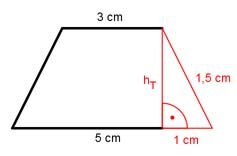

Aufgabe 204 Eine Pyramide ist 5 cm hoch und hat als Grundfläche ein gleichschenkliges Trapez mit den parallelen Seiten a = 5 cm, c = 3 cm und der Länge eines Schenkels c = 1,5 cm. Wie groß ist ihr Volumen V?  Strahlensatz: G * h V = ------- 3 5 cm + 3 cm G = -------------- * hT 2 Satz von Pythagoras im roten Dreieck: 5 cm - 3 cm Die kurze Kathete errechnet sich aus ------------- = 1 cm 2 1,5² cm² = hT² + 1² cm² |-1²cm² hT² = 2,25 cm² - 1 cm² = 1,25 cm² |√ hT = 1,12 cm 5 cm + 3 cm G = ------------- * 1,12 cm = 4,48 cm² 2 4,48 cm² * 5 cm V = ----------------- = 7,5 cm³ 3